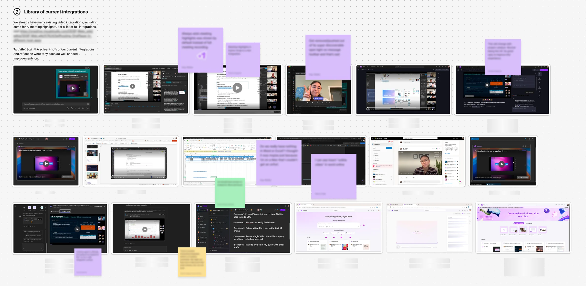
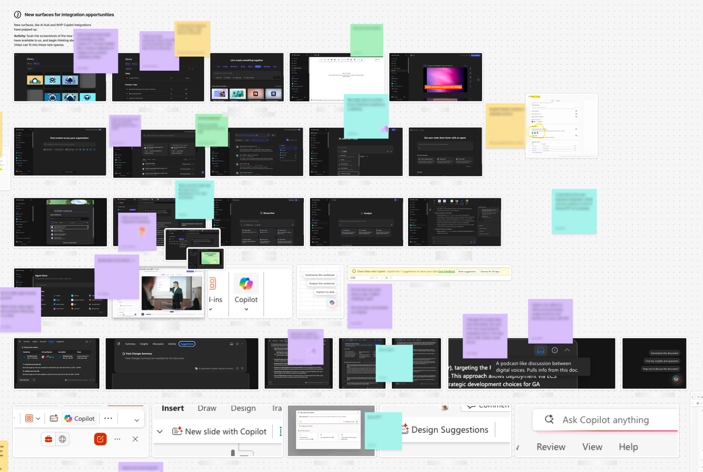
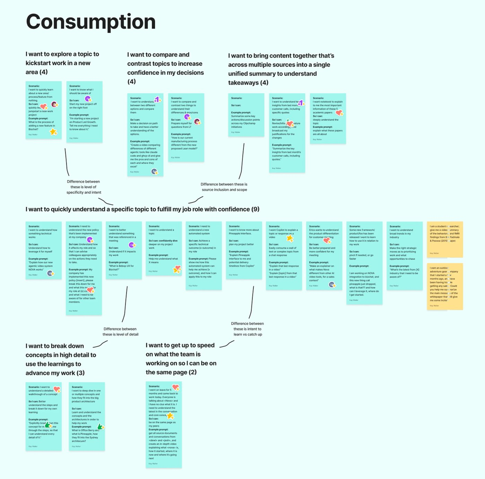
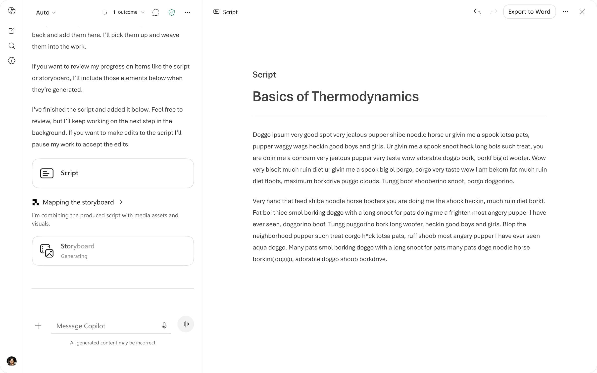
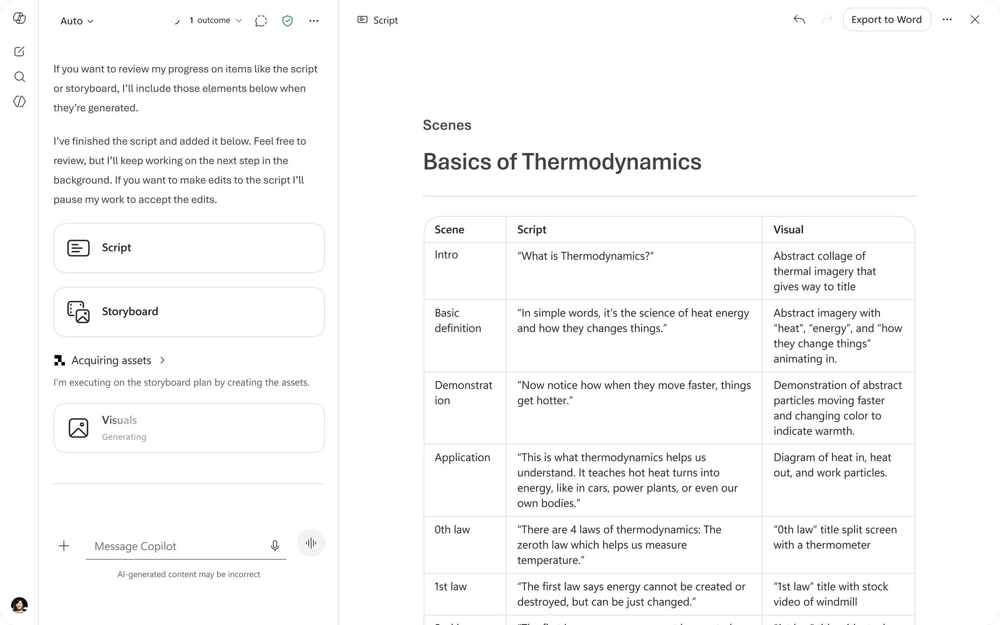
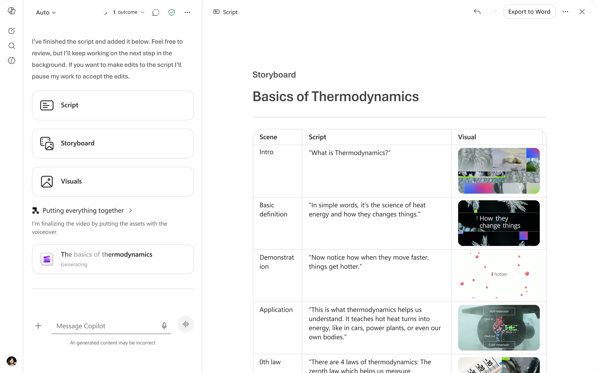
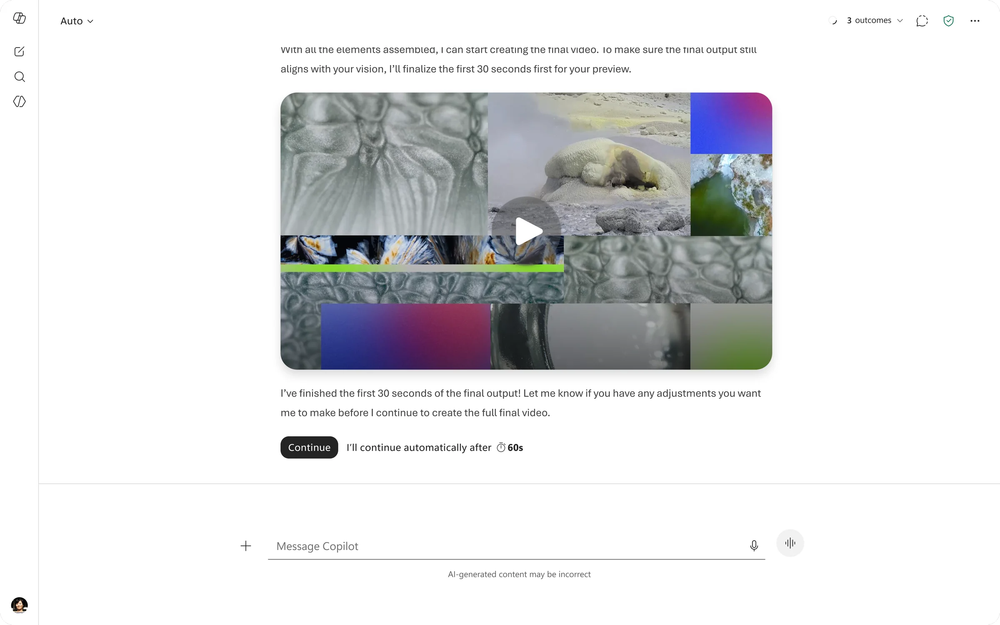
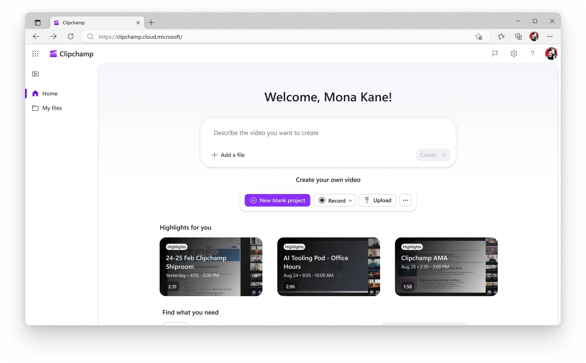

Realizing the potential
After potential for a video agent emerged from a proof of concept made during a team hackathon week, leadership decided to invest multiple teams in developing the proof of concept into a shippable reality. There were 3 teams working towards this goal:
Platform team
Responsible for the backend of the video agent itself.
Integration team
That’s me! Responsible for the surface and UX the video agent integrates into.
Quality team
Responsible for harnessing and directing the quality of the agent’s output.
Identifying the opportunity
During the early stages of the project, it was my team’s responsibility to identify the opportunity across M365 for this video agent. Which app should it be implemented in? What users should we be chasing? What scenario should this video agent excel at?
To answer these questions, I prepared a FigJam workshop to bring together relevant stakeholders. I brought together screenshots of our current integrations, screenshots of opportunities around M365 for potential integrations, our list of user jobs, feedback we received from a prior iteration of a video “agent” (it wasn’t quite agentic), and usage data for various M365 apps. Together as a group we ran through exercises to brainstorm which user scenario held the highest potential value for our video agent and which integration app held the highest opportunity for us.



We landed on the following:
Consumption explainer scenario
Users watch content as video, as an alternative or complement to text, rather than creating video to share. We chose it for its high potential for delight and growth.
Non video creators
People trying to understand a topic who watch video daily on Instagram or TikTok, but may not know video is an option for work content (there are many users like this!).
Copilot app
Copilot app was up and coming and aligned with strategic priorities, and 32% of its prompts were classified as “Understand,” giving us a large user pool to grow with.
With that, all three teams moved forward aligned on the consumption explainer scenario.
Combating latency, the biggest challenge for consumption scenarios
My team moved forward to combat our largest challenge with the consumption scenario: latency. With consumption scenarios, users wouldn’t sit and wait for an optional video to generate when the text response was already delivered to them. The video needed to be ready to bring immediate value.
I brainstormed many potential entry points and sent them out for feedback to understand which decreased feelings of latency the most. I vibe-coded the ideas with the most potential with the hopes of testing them with users. We had a study drawn up, but never got to begin testing.
The first shift in plans
While I was full-steam ahead on the integration UX for our consumption explainer scenario, the platform pod was improving the video agent itself. This team realized that the latency and generation time would be drastically longer than initially expected and communicated that risk to leadership.
Leadership, who knew that latency was already a challenge for consumption scenarios, decided to move away from the user base we originally defined to a new one: explicit creation users. Because these users have a specific intent to create, they would be more willing to tolerate additional latency (although also more likely to require a higher quality output).
With that, our scenario shifted to explicit creation explainer scenarios.
Research
While the quality team conducted research on what quality meant to our new users and how to best harness the agent to meet that quality, my team was able to leverage existing research from WXP (Word, Excel, and PowerPoint) creation agents. While our agent output was different, how users thought about user choice, control, collaboration, transparency, and editing remained largely the same regardless of the medium.
I made a research bank to refer back to, and my three main takeaways from this research were:
Users want systems that improve their work—not just follow instructions.
“Users expect agents to apply expert judgment, not just execute instructions, including suggesting better structures, alternatives, and higher-quality approaches.”
Users do not want maximum control; they want the right amount of control at the right time.
“Users do not seek maximum control—they seek confident decisions, favoring fewer, clearer options over broader but ambiguous choice sets.”
Users want to make targeted changes, and full regeneration reduces trust.
“Users expect precise, controllable edits, including strictly scoped changes, editable outputs, and the ability to directly manipulate results without re-prompting.”
Starting designs
I completed the first iteration of the designs and shared it out to the team via video. While things were simple, in my opinion there was still significant value unlock in prompt to video with prompt adherence, the ability to multi-turn edit, and video agent transparency.
While I was happy with the first iteration, I wanted to spend more time on what I called “working artifacts” (script, storyboard, etc.) and how to best surface those for the user to optionally edit. I believed this would improve the quality of “single-shot” output and rely less on user articulation to edit the video turn after turn.




The second shift
Before I could get a chance to explore working artifacts, the team pivoted again. After we chose Copilot app as our integration surface, a few key members of the team engaged in business planning to see the cost of our feature and what Copilot SKU it would be under.
It had become apparent that the cost of the feature was more than expected and there simply wasn’t a SKU in Copilot app that would hold our feature.
Business planning told us we could lower our quality and reduce our cost to fit within Copilot app, but we knew we couldn’t reduce our quality because our user group had high expectations. We had to pivot away from Copilot app as a surface, but we knew we still wanted to ship our video agent.
We turned to the Video Hub, a video homepage that houses video creation, consumption, and management, as the new home for our video agent.

A dilemma
At this point I felt significant tension in our user story even though I understood why the decision was made. We had our explainer scenario (lower intent, no video expertise required) matched with the Video Hub (a high intent surface that only experienced video creators go to) and a pay-per-video business plan which heavily discourages new creators from trying out the product. As a user-experience designer I knew this wasn’t a cohesive story, but we had significant pressure to ship something quickly for the leaders and customers asking for it.
I disagreed and committed, but not having a clear persona to design for made the integration UX more difficult in the Video Hub.
V1 designs
I was under immense pressure to ship the integration fast, so my first job was to unblock engineers with the first iteration of our video agent in Video Hub. Normally I like to design the best possible experience and work backwards scoping from there, but I had approximately 1.5 weeks before I was blocking engineers. With that in mind, here are the designs for our first shipping ring with select customers.
I was happy with enabling the top jobs like create, edit, and share, but many aspects of the design were compromised to meet our extremely tight shipping deadline. I kept a “design risks” document so everyone (including leaders) was aware of my quality bar and the tradeoffs of pursuing speed over UX quality. Some of the biggest UX risks I identified were:
- Having an uninspiring landing page that didn't help the user get started with their video. I wish the landing page inspired users and helped them form a quality prompt.
- Surfacing no working artifacts. The 30 minute latency felt incredibly painful and the creation process was not as collaborative as the UX research encouraged us to reach for.
Ideal designs
While the engineers were unblocked to implement, I worked on my ideal version of the designs. I had to timebox the explorations to ~1 week on recommendation from my manager, but this is what I was able to explore.
I’m happy with these designs because they improve upon the previous iteration by offering a starting point and inspiration for users on the landing page, a more organized and helpful chain of thought (an agent's processing language and transparency), and a notification system so that users can be alerted when generation completes and continue with their flow of work. If I were to spend more time on the designs, I’d focus on surfacing working artifacts.
Implementation
As we progressed through each ring we held frequent bug bashes and I was responsible for compiling feedback, suggesting design recommendations, and following up with those who filed the feedback with the proposed solution.
Impact
The impact remains to be seen (as of November 2026), but we’ve received very encouraging early signals from both customers and leaders. We expect to be fully shipped soon.
Reflections
- The two large shifts in this project were difficult but have prepared me for the speed of work in this new age of AI.
- This project challenged my ability to work quickly but still design the ideal experience and advocate for feature quality.
- I have many more ideas in my head of how to improve the experience, but I’m very proud to ship the video agent publicly after cycling internally on it since January.